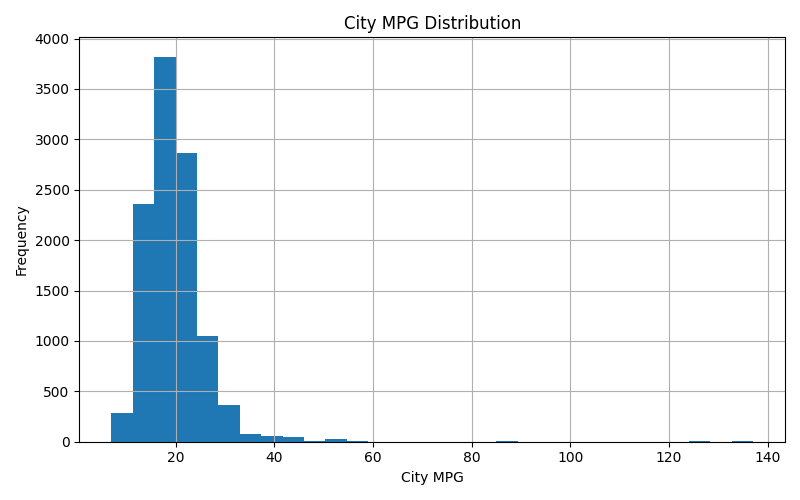
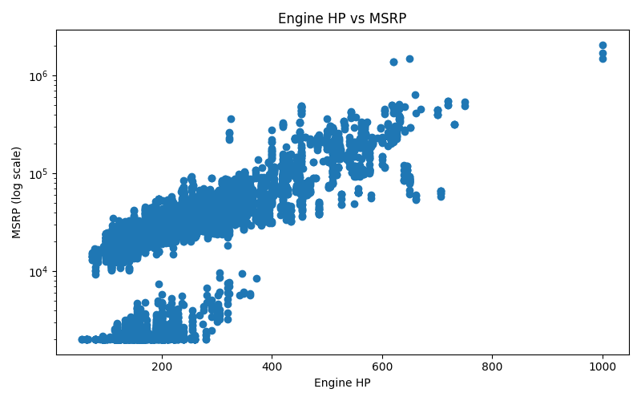
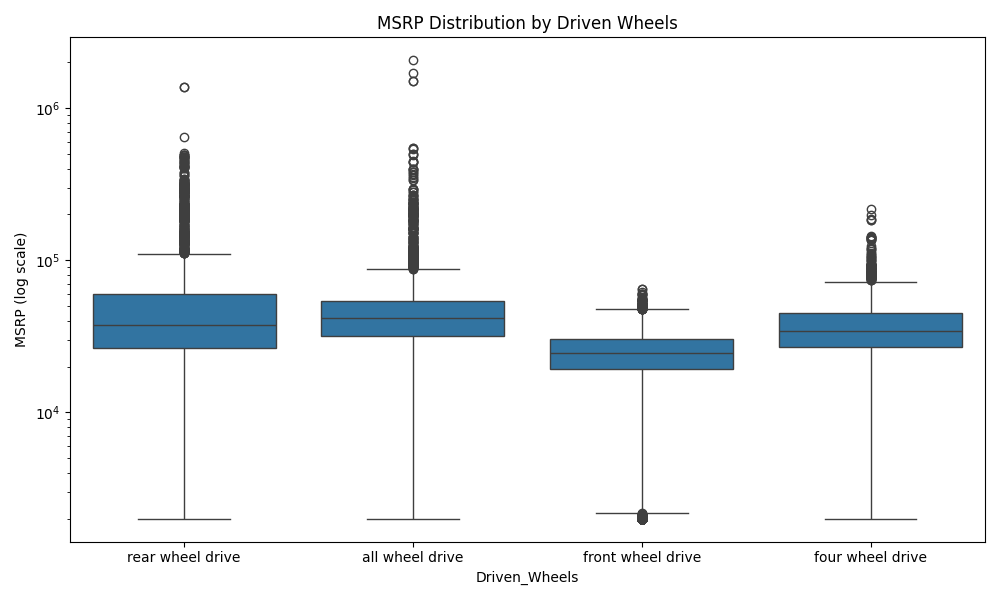
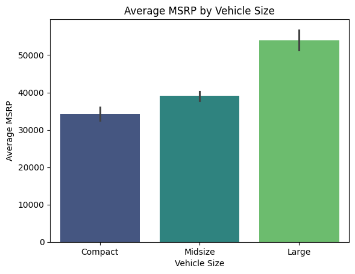
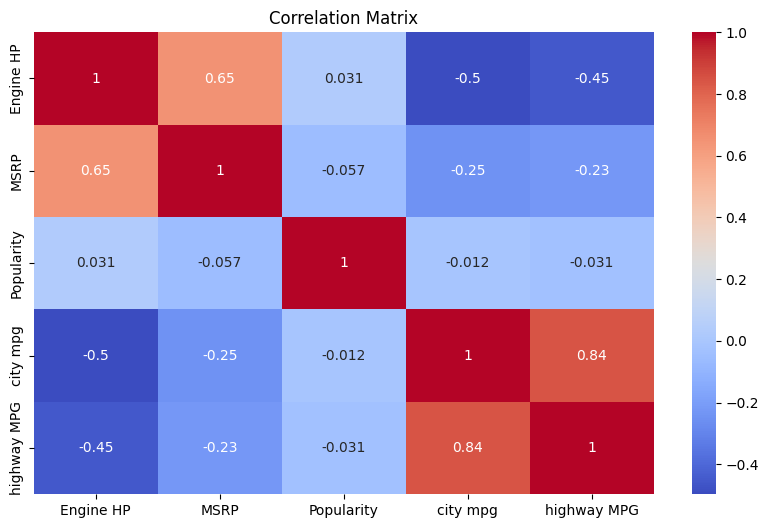

Complete data cleaning, feature engineering, EDA, and correlation analysis
Missing values were identified in 5 columns. Each was handled with a strategy appropriate to its distribution and semantics.
| Column | Missing | Strategy | Rationale |
|---|---|---|---|
Engine HP | 69 | Median per Make | Skewed distribution; grouping by Make preserves brand-level power profiles |
Engine Cylinders | 30 | Median per Make | Integer-like ordinal; brand groups share cylinder configurations |
Engine Fuel Type | 3 | Global mode | Only 3 missing; overwhelming majority are gasoline vehicles |
Number of Doors | 6 | Mode per Vehicle Style | Style dictates door count (e.g. coupes → 2, sedans → 4) |
Market Category | 3,742 | Fill "Unknown" | ~31% missing — too many to drop; preserves rows, flagged as unknown |
| Column | From | To | Notes |
|---|---|---|---|
Year | int64 | int | Already correct — explicit cast confirms integrity |
Engine HP | float64 (with NaN) | float64 | Kept float to preserve decimal precision after imputation |
Engine Cylinders | float64 (with NaN) | int | Cast to int after imputation — cylinders are whole numbers |
Number of Doors | float64 (with NaN) | int | Cast to int after imputation |
Filtered dataset to Year ≥ 1995, removing pre-1995 vehicles.
Converted to lowercase to prevent duplicate group keys from case variation:
e.g. "Sedan", "sedan", "SEDAN" all become "sedan"
Average of city and highway MPG — a single efficiency metric per vehicle
Total MPG = (city mpg + highway MPG) / 2
MSRP divided by Engine HP — measures cost-efficiency of horsepower
Price per HP = MSRP / Engine HP
| Metric | Engine HP | MSRP ($) | Popularity | Highway MPG | City MPG |
|---|---|---|---|---|---|
| Mean | 256.8 | $43,428 | 1,568 | 26.5 | 19.5 |
| Median | 240.0 | $31,250 | 1,385 | 26.0 | 18.0 |
| Std Dev | 108.8 | $61,533 | 1,452 | 7.5 | 6.6 |
| Type | Avg MSRP | Avg Pop. |
|---|---|---|
| All Wheel Drive | $59,397 | 1,510 |
| Four Wheel Drive | $38,461 | 1,760 |
| Front Wheel Drive | $24,648 | 1,397 |
| Rear Wheel Drive | $60,469 | 1,776 |
| Size | Avg MSRP | Avg Pop. |
|---|---|---|
| Large | $56,787 | 1,906 |
| Midsize | $40,887 | 1,452 |
| Compact | $37,774 | 1,475 |
| Cylinders | Avg MSRP | Avg Pop. |
|---|---|---|
| 0 | $34,512 | 1,987 |
| 3 | $13,547 | 792 |
| 4 | $25,548 | 1,436 |
| 5 | $22,858 | 856 |
| 6 | $36,491 | 1,693 |
| 8 | $65,560 | 1,756 |
| 10 | $184,124 | 1,830 |
| 12 | $290,142 | 830 |
| 16 | $1,757,224 | 820 |





| Variable Pair | Correlation | Strength | Interpretation |
|---|---|---|---|
| city mpg ↔ highway MPG | +0.843 | Strong ✓ | Cars efficient in the city are nearly always efficient on highways — both measure the same underlying fuel efficiency |
| Engine HP ↔ MSRP | +0.654 | Moderate–Strong ✓ | More powerful engines command higher prices, though brand prestige adds noise |
| Engine HP ↔ city mpg | −0.497 | Moderate ↓ | Higher horsepower trades off against fuel efficiency — performance vs economy |
| Engine HP ↔ highway MPG | −0.451 | Moderate ↓ | Same trade-off visible on highways |
| MSRP ↔ city mpg | −0.247 | Weak ↓ | Expensive cars tend to be slightly less fuel-efficient, but luxury EVs weaken this relationship |
| Popularity ↔ any variable | ≈ 0.00 | None | Popularity is essentially uncorrelated with all numeric features — it reflects brand/marketing dynamics, not vehicle specs |